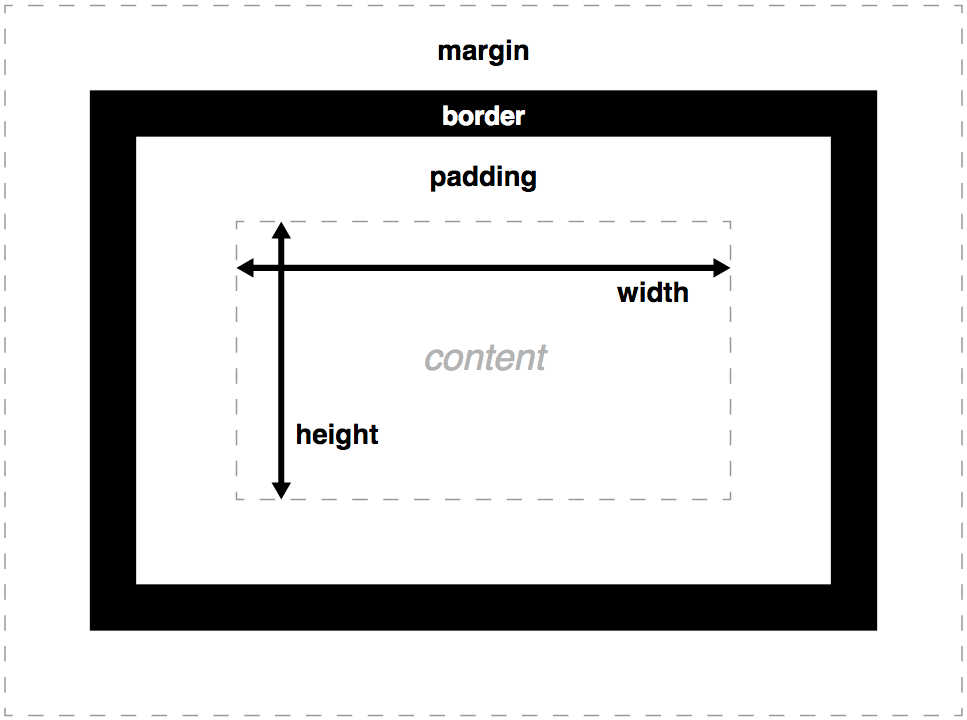
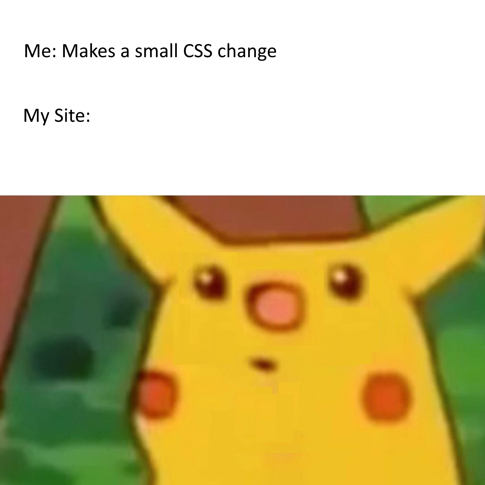

How to insert CSS
Cascading style sheets (CSS) is a coding language that is used to control the styling of HTML documents. CSS is made up of rulesets - collections of rules that change the display of HTML elements in the web browser.
There are three ways to style your HTML document using CSS - inline styling, internal style sheets and external style sheets.
Inline styling is done by adding the style attribute directly inside the HTML tag of the element you want to change. In last week's worksheet you might have noticed this was how I added background colours to the <section> elements.
Task: The <p> for this paragraph currently has a style attribute with some CSS defining the background colour - try changing colour it's set to by replacing the word salmon with the name of another colour (you can see a full list of recognised colour names here).
Internal style sheets are created by adding a <style> element inside the <head> of your HTML document. This element tells the browser to read anything written inside of it as CSS instead of HTML.
Task: You can see an example of internal CSS on lines 14 - 49 of this page's HTML document. These rules are not currently being applied to the web page because they're commented out (review last week's HTML worksheet if you want a refresher on what comments are). Delete both the <!-- on line 13 and the --> on line 50 to uncomment the code and apply the internal CSS. Remember you might need to save your file before the change is shown in the browser.
External style sheets are text files that are created with a .css file extension, usually placed in the same directory as the index.html. These files can then be linked to from the head of a HTML document as we did in our boilerplate and in the HTML document for this web page.
Task: below the internal CSS is an external CSS file import - line 53 of this web page's HTML document. To apply the external CSS uncomment it by import line by deleting both the <!-- above and the --> below the <link> element. Again remember you might need to save your file before the change is shown in the browser.
Each method has its place and uses in style web sites, though the majority of style is usually applied through the use of external style sheets.
Writing CSS Rulesets

Instead of changing the style properties of HTML elements one at a time we can use CSS to group multiple rules together into a ruleset which can then be applied or removed from HTML elements as needed.
CSS rulesets for internal or external stylesheets are written using the syntax seen here =>
First we define what we want to change the style of by using a selector followed by curly brackets { } to indicate which rules apply to that selector.
Then inside of the curly brackets we can declare one or more property and value pairs to change the element's display. Each property and value pair is seperated by a colon and completed with a semi-colon at the end of the line.
⚠️IMPORTANT NOTE⚠️ - HTML, CSS and JavaScript use American English spelling 🙄 while the instructions refer to using a colour but be sure to spell it color in your attributes and CSS.
As we've already seen writing inline CSS works with the same property and value pairs but instead of writing your rules inside of a selector's curly brackets you write them inside of the "" after the style attribute inside of the HTML element's tag.
Task: Open your style.css file in VS Code alongside your HTML and look for the ruleset for each section's container on lines 130 - 142. Try changing the word solid on line 134 to the word groove then save your file and see how it has changed the style of the page in the browser. Now try adding a new rule inside the brackets by adding a new line just below the overflow property - we can change the font within each section by using the property font-family and a value of a name of a font - in this case 'Work Sans'. Your new line of CSS should look like this:
font-family: 'Work Sans';
Selectors
Selectors indicate which HTML elements you want a particular ruleset to apply to. All of the following can be used as selectors:
elements - you can style all instances of a given HTML element - selected with CSS by using the name of the element in the following way:
elementname {
}
for example to change the font-size of all <h1> elements you could write:
<!-- HTML -->
<h1>This heading's font should be 16px</h1>
/* CSS */
h1 {
font-size: 16px;
}
Task: Add a new ruleset at the bottom of your style.css file that changes the size of the font for all <h1> elements to 80px.
classes - you can group different elements together by adding the class attribute inside their HTML tag - selected with CSS by using the name of the class preceded by a . in the following way:
.classname {
}
for example to add a white border to all of the elements belonging to the class called white-border you could write:
<!-- HTML -->
<img class="white-border" src="./fakeImageFile.png" alt="A fake image file made up for the exercise">
<p class="white-border">this paragraph will also have the same CSS ruleset applied to it</p>
/* CSS */
.white-border {
border: 2px solid white;
}
Task: Add a new ruleset at the bottom of your style.css file that adds a 2px solid orange border to all the elements belonging to the orange-border class. After that try adding the class to the <code> tag on line 259 of the HTML document for this page.
ids - you can select an individual element by adding the id attribute inside their HTML tag - selected with CSS by using the name of the id preceded by a # in the following way:
#idname {
}
for example to change the background colour of the element with the id of my-list you could write:
<!-- HTML -->
<ul id="my-list">
<li>This list's</li>
<li>background should</li>
<li>be plum</li>
</ul>
<ul>
<li>This list's</li>
<li>background won't</li>
<li>be plum</li>
</ul>
/* CSS */
#my-list {
background-color: plum;
}
Task: Add a new ruleset at the bottom of your style.css file that changes the background colour of this paragraph to plum. You'll need to check the <p> element's id in the HTML document.
Multiple selectors can be used for one ruleset by using a comma seperated list - for example to add a white border to all of the <p> elements, all of the elements belonging to the class called white-border, and the element with the id of my-list you could write:
/* CSS */
p, .white-border, #my-list {
border: 2px solid white;
}
There are even more advanced and dynamic ways of selecting elements for styling with CSS. We'll be using a few of these techniques during our assignment 2 exercises but for now if you're curious to read more MDN has information on all the different ways to use CSS selectors.
Properties and Values
We've already used a few common examples of property/value pairs in our CSS such as background-color: plum; but there are many more possibilities. As you can see the list of available CSS properties is long but they are often named directly for what they do so using a search engine to find their MDN page is often as simple as searching for css plus what you want it to do plus MDN, eg: searching for css transparency mdn will return the page for the opacity property.
Task: Try working out what CSS property/value pair will give rounded corners to elements with the section-box class and then add it to the ruleset applied to that class.
While there are a large number of properties many of them expect similar types of values such as colours, lengths or percentages. CSS supports a range of possible values for these types, eg: a colour can be defined through the use of a colour name but also an RGB value. Check out the reference pages below to get an idea of what format these common values expect.
Some other CSS properties will need specific keyword values instead of these generic types - for example border-style only accepts the key words like groove, ridge and dashed as values. If you're unsure the best way to check what these values a property expects is to look at the its MDN documentation.
Task: Find the ruleset applied to the <a> elements in this page's style.css file which currently contains a text-decoration property with the value of none. Work out what to change this value to so that all the links will instead have a white dotted underline.
Tip - VS Code has a useful context sensitive autocomplete feature, if you start typing the property or value in CSS it'll pop up with appropriate suggestions, very handy if you think you know the property or value but can't quite remember it's exact name off the top of your head.
The Cascade
Cascading style sheets are named after the process of compiling (combining) the style information from all of the above methods used in your code, along with the default rules as defined by your browser. The is referred to as the cascade as CSS rules will override other CSS rules depending on what method you used to define them and what order they were written in your code.
As with HTML, CSS reads left to right, top to bottom, so if there's any conflicting rules the last value read (usually the closest to the bottom) on the page will be used. On top of this there is an order in which they are applied based on where or how they are written:
- Browser defaults - all HTML elements have hidden default CSS styles, this is why some use block display while others are inline as we looked at last week. The defaults are actually slightly different across browsers which is the reason some web pages look different in Chrome vs Firefox. If you're interested to see the rules this site will show you a comprehensive list of an element's default CSS rules in each different browser.
- External and internal style sheets - whichever <link> import or <style> tag is lower in the HTML document will be read later and therefore override any others if there's a conflict
- Inline style - any CSS declared with the style attribute inside of a HTML element will override anything from a <link> import or <style> tag
Task: Move the <link> tag on line 50 of the HTML source code above the opening of the <style> tag and notice how the placment order can be used to override certain styles.
In addition both specificity and inheritance can change which CSS rule will be applied to an element if there's a conflict - please read this article for further details.
The way CSS overrides itself can be tricky to keep track of but is an important feature of how the language is used to change the style of the web page in different contexts. Later this semester we will be looking at how we can take advantage of this to create responsive and dynamic designs but for now you shouldn't have to worry about it too much.
The Box Model
All HTML elements can be thought of as boxes when displayed on the web page and each has the following parts shown in the image to the right - content, padding, border and margin.
content - space taken up by whatever is inside the element, be that text, image or another element
padding - the space between the content and the border
border - you can render a border around the element in a range of styles and sizes
margin - the space between the border and other elements on the web page
The size of each of these seperate parts can be changed by using their associated CSS property of the same name. These properties take either a percentage or length value, you should refer to the links provided in the previous section for more detail on each but it's common to use either absolute units like px or relative units like %, vw/vh or even rem. Some HTML elements will come with a default value for these properties but they can easily be overwritten using CSS. You can also address the different sides individually by using their own properties, eg: margin-bottom: 12px; will only set the margin on the bottom of the element to 12px.
Task: Use padding, border and margin to add some spacing to help structure your a1 research project page. If you don't know what values to use experiment and look online at how this page and other websites use these properties for clear information design.
Tip - Borders need a few different properties before they'll show up, border-styles, border-color and border-width. You can declare each seperately as seen in the source code for this page or if you want to get more advanced you can declare them all together in the border property - check the MDN page on CSS borders for more details and examples of how this works.
Creating Layouts
While we can use the box model to control the spacing within elements themselves making sure those elements are placed where you want them in relation to the overall layout can be a surprisingly tricky task at first - but once you become familiar with a few key CSS properties you'll be able to construct any page structure you might need.
display - in last week's worksheet we covered how elements can be displayed as either inline or block, both of which are values you can change using the CSS display property.
/* CSS */
.inline-example {
display: inline;
}
.block-example {
display: block;
}
max-width - allows you to define how much horizontal space your block elements take up, as you can see in the ruleset for section-box class in this page's style.css file. Note that while the CSS property width exists in most cases you'll want to use max-width instead as it handles smaller windows better by default.
/* CSS */
.width-example {
max-width: 80%;
}
overflow - controls what happens when an element's content needs more space then element itself. By default the content will overflow outside the edge of the element as seen in the below recreation of a common meme about CSS.
Task: Find the ruleset for the "overflow-meme" class in this page's style.css file and try adding an overflow property with the value of hidden or auto - notice how each of these values changes the way the element handles overflowing content.
CSS IS AWESOME

float - is used to place an element on either the left or right side of its parent element container and allows text or other inline elements to wrap around it in a specific way - like the image to the right of this text.
Task: All of the <img> elements on this page have a float value of right as defined by the element selector in the CSS file. This can be overridden by assigning a different float value in the inline style attribute in the HTML file. Try changing the float value of this particular <img> to left using inline CSS.
While the above properties will get you a long way in creating a page layout there are two slightly more advanced ways to go about structuring your page that are more commonly used on modern web pages, flex and grid. Both are values you can give the display property - we will look at grid in a bit more detail later in the semeseter but for now let's briefly introduce flex as its a handy way to centre your elements in a neat and ordered layout.
flex - when used as a value for the display property it creates a flexbox layout which automatically arranges the child elements inside the parent element assigned as flex.
/* CSS */
.flex-container-example {
display: flex;
flex-direction: column;
justify-content: space-around;
align-items: center;
}
The above code is an example of some CSS properties you might assign to a HTML container element (commonly referred to as a flex container) which you want use to arrange its child elements (items inside a flex container are called flex items). It tells the container to arrange its contents using flex (display: flex;), to order those contents in a vertical downward direction (flex-direction: column;), to keep and equal amount of space between each flex item inside of it (justify-content: space-around;) , and finally to align each flex item in the center (align-items: center;).
Task: Write a CSS ruleset the same as the example above in your style.css file and see how it changes the layout of the item list.
This might seem like a lot of properties and values to keep track of but once you get the hang of it flex will become a useful tool in creating layouts that respond to different window sizes. For a more detailed rundown of how flexbox operates I'd highly recommend reading through MDN's basic concepts of flexbox. CSS tricks also have a helpful visual guide to explain each flex related property - A Complete Guide to Flexbox. I'd recommend bookmarking this site and using it whenever you want to use a flex layout, something I still do when creating my own websites.
Task: Continue to work on the structure and information design of your a1 research project page by controlling the overall layout using display, max-width, overflow, float or flex where appropriate.
Tip - Keeping elements centred without flex is little trickier than you might expect, the subject of many popular programming memes. I've used a slightly older trick on this page rather than flex to centre the sections. I'm using a combination of two CSS rules - max-width: 67%; margin: 0 auto; which sets the section's width to two thirds of their parent element's width and then sets both the left and right margins to equally split the remaining third using the auto value.
Text, Fonts and Links
CSS is also used to style text, select which fonts are used and how links are dynamically styled.
Styling text is relatively straight forward it can be coloured, aligned and decorated.
Fonts are set by specifying a particular font using the font-family property as we did in the Writing CSS Rulesets section. While we can set a specific font to each element you its often easier to apply the property to the <body> element so it's inherited by all of its children.
A chosen font will only work if it's installed on the user's computer - common fonts such as Times New Roman or Georgia, and generic families such as such as serif and sans-serif are all what's known as web safe fonts and can reasonably be expected to be installed on any computer system.
If you want to use a custom font that's not web safe you need to make sure to import it, either providing the font file itself or linking to where it can be found online. This can be done using the @font-face CSS selector to define a specific font as seen below.
/* CSS */
/* this is an example of linking from a local font file
@font-face {
font-family: 'Work Sans';
src: url(fonts/WorkSans-Regular.ttf);
}
/* this is an example of linking from an online location
@font-face {
font-family: 'Rubik Iso', cursive;
src: url(https://fonts.googleapis.com/css2?family=Rubik+Iso&display=swap);
}
Note that you'll need to use the font-family property to define a name of your choice for the font (this is then what's used as a value in other rulesets when setting the font-family property) and the src property to link to your font file, which will usually have a .woff, .woff2 or .ttf extension. Once placed at the top of your CSS file the @font-face will let you use the font in other rulesets by using the name you chose.
You can then also specify font-size using either px, em or rem units. Due to their relative nature em and rem can be very useful as they will both scale based on the user's browser and operating system settings, so if they have text scaling enabled it would also be applied on the web page.
Tip - There are many places to find open-source fonts online, while Google Fonts can be a great resource the amount of different fonts can be overwhelming if you don't have a specific thing you're looking for. Sometimes smaller collections like Open Foundary or Velvetyne can be more inspiring - just don't forget to check their terms of use, while free some require you to credit the type designer or foundry where appropriate.
The same font and text styling works for <a> elements but because links also involve different interactive states we can use some further variations on CSS selectors called pseudo selectors to change their style based on these states. Each of the rulesets below would only be applied if the <a> element meets the noted state requirements:
/* CSS */
/* :link is an unvisited link */
a:link {
color: red;
}
/* :visited is a link the user has previously clicked */
a:visited {
color: blue;
}
/* :hover is applied when the user hovers the cursor over it */
a:hover {
color: green;
}
/* :active a link the moment it is clicked */
a:active {
color: yellow;
}
Tip - Not all pseudo selectors will work for every element, however some like :hover can generally be used across the board. As with all CSS the order in which the rulesets are placed matters (see The Cascade section) so make sure to write any pseudo selectors underneath the ruleset of the base selector in your CSS file.
Task: Style the text and links in your a1 research project page and then download and include an open-source font on your page using the @font-face selector.
Favicons
Favicons are small images used to represent websites in browser tabs alongside the text defined in the <title> element.
Task: Figure out how to add a favicon to your a1 research project page that will appear in the browser tab it opens in. If you're stuck on what favicon you want to use you can generate one using the link found in the week 3 module on canvas.
Key Task for the Week
Your a1 research project page's style.css should now be on it's way to being appropriately styled and laid out. Continue to add and revise your styling to make sure it's appropriate for the context of communicating your research information ahead of your final submission. You shouldn't need to make huge changes - while I'd love to see you express yourself through the stylistic design it by no means needs to be complicated, sometimes simple is best when focusing on information design for clear communication.